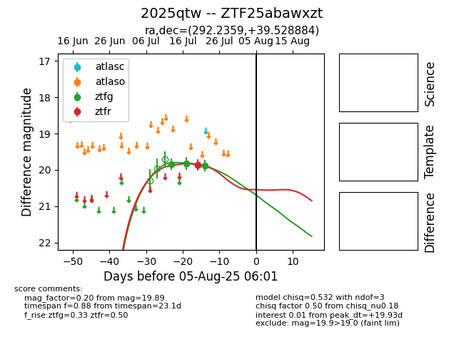

Target 2025qtw at 2025-08-05 06:01, see:
FINK: fink-portal.org/2025qtw
Lasair: lasair-ztf.lsst.ac.uk/objects/2025qtw
ALeRCE: alerce.online/object/2025qtw
TNS: wis-tns.org/object/2025qtw
YSE: ziggy.ucolick.org/yse/transient_detail/2025qtw
alt names
ZTF25abawxzt (ztf,fink)
2025qtw (tns,yse)
coordinates:
equatorial (ra, dec) = (292.2359,+39.52888)
galactic (l, b) = (72.2715,+10.27553)
photometry
last ztfg=19.89, ztfr=19.86
4 ztfg, 1 ztfr detections
